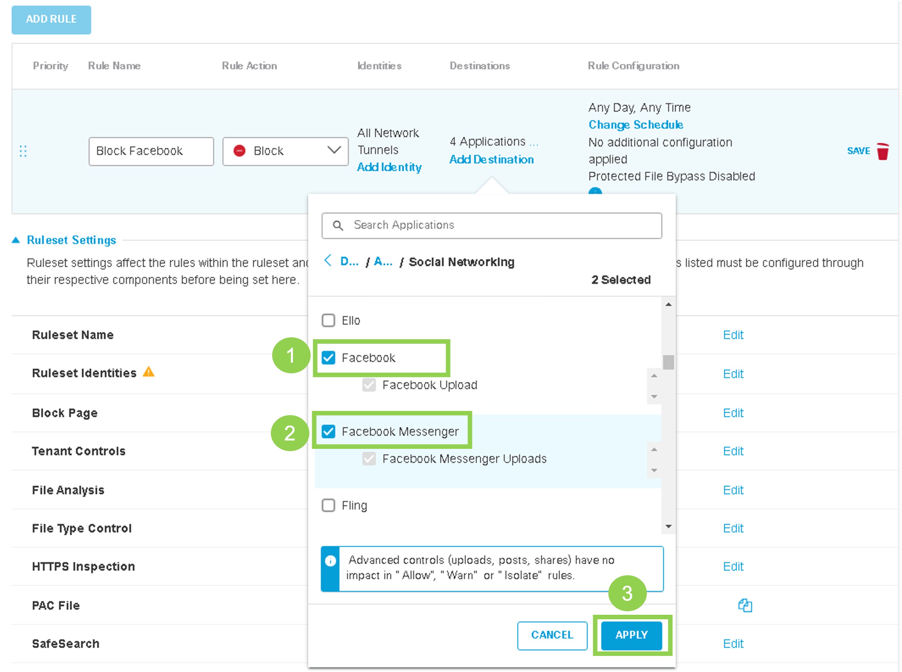
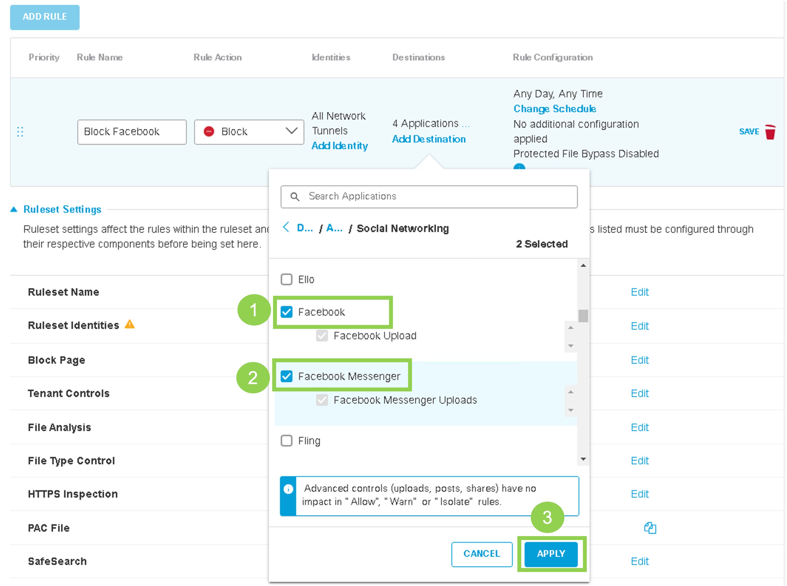

Task 6: Umbrella Policy for Site300
Create Umbrella Policy to block any icmp traffic to Google 8.8.8.8 and block any social media websites.
Step – 1 Umbrella Firewall Configuration
- Configure an Umbrella Firewall Policy.
- On Umbrella dashboard, go to Policies>Management >Firewall Policy. At the top-right corner, click Add

- Create a Rule Name, and under Rule Criteria, specify ICMP as the protocol, and IP.
- Add a Rule name and select Block action

- Protocol : ICMP
- Destination : 8.8.8.8

- Add a Rule name and select Block action
- On Umbrella dashboard, go to Policies>Management >Firewall Policy. At the top-right corner, click Add
- Enable logging and Save the policy

Step 2 - Umbrella Web Policy
-
Configure an Umbrella Web Policy to block social media websites.
- Go to Policies>Management>Web Policy and click Add

- Click Add Rule. Give the rule a Name and click Add Identity

- Select Inherit Ruleset Identities, then Apply

- Click Add Destination

- Click Application Settings, then search for Social Networkingk. Select Social Networking (Facebook), then Apply

 
 - Click Save

- Click three dots and then Enable Rule

- Confirm by clicking Update

- Go to Policies>Management>Web Policy and click Add
-
Under Ruleset Settings, go to the Ruleset Identities section and click Edit

-
Select Tunnels and click Save

-
Go to the HTTPS Inspection section and click Edit

-
Select Enable HTTPS Inspection, then Save
-
Scroll down and click Close

Step 3 - Verfication
- Test if traffic is being redirected to Umbrella.
- Connect to the Ubuntu Host on VPN 10.
- Navigate to welcome.umbrella.com. A green check mark should appear, confirming that traffic from VPN 10 is being successfully redirected to Umbrella. Step 4 Access internet websites from the Ubuntu host on Site 300 (VPN 10).
- Use Chromium to navigate onto traditional websites, such as www.cisco.com.
- Use Chromium to navigate onto www.facebook.com. The page load should time out.
- ICMP to 8.8.8.8 should not be allowed.
- From the Ubuntu Host on VPN 10, use Terminal and try to ping again 1.1.1.1, 4.2.2.1 and 8.8.8.8 (Google should fail).